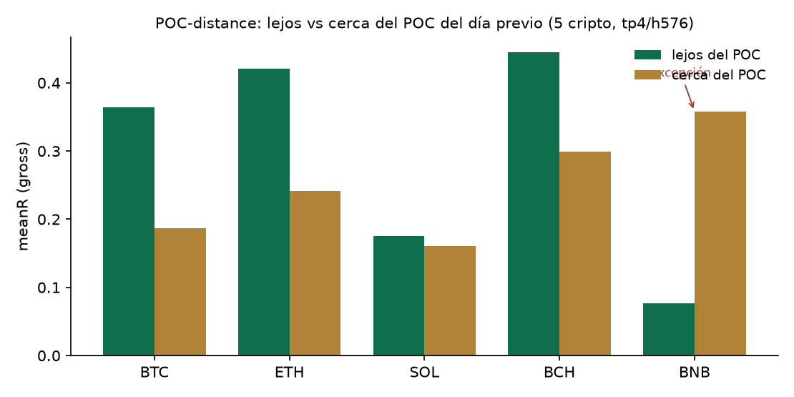

Econophysics — statistical-physics methods applied to markets (Mantegna & Stanley, 2000) — produced a robust core: heavy tails, power laws, square-root impact, long memory of order flow. The challenge is not a shortage of phenomena but separating the real, samplable, operationalizable edge from the overfitting artifact and from physics envy. FQ takes a strict stance: an idea enters the engine only if (a) it passes a gate that deflates by how many things were tried, (b) it adds within the already-confirmed edges (orthogonality), and (c) it is measured forward before any capital or conviction decision. This review maps what survived.
The system's core is not new data — it is validation. Under multiple testing, ~20 configurations
guarantee a spurious "5% significant" result. The Deflated Sharpe Ratio (Bailey & López de Prado,
2014) corrects the Sharpe for the number of trials and non-normality (skew/kurtosis), requiring
DSR > 0.95. It is complemented by CPCV (combinatorial purged
cross-validation with embargo, for leak-free out-of-sample estimation) and PBO (probability of
backtest overfitting; Bailey et al., 2017). FQ implements all three in tools/validation_gate.py.
It does not generate alpha — it certifies it.
Cumulative Volume Delta gives the sign of flow; its basis is the square-root impact law (σ·√(Q/V)), confirmed in crypto (Donier & Bonart, 2015; Sato & Kanazawa, PRL 2025). The CVD-confirmed subset (imbalance ≥ 0.50) yields +0.27R (SOL) / +0.34R (BTC) over 5 years of tick data, DSR ✓. Causal and free (Binance aggTrades). A +1.47R result at n=17 was discarded by the gate as a small-sample mirage.
Large orders execute in pieces → positive autocorrelation of flow sign (Lillo, Mike & Farmer, 2005; Bouchaud, Farmer & Lillo, 2009). FQ measures lag-1 autocorrelation (F2). In BTC the premium tier (CVD✓ & F2✓) reaches DSR 0.995. Honest finding: F2 is an idiosyncratic per-symbol confirmer (pays in 4/6; negative in ETH), not a universal scaling law — the "scales with institutional-ness" hypothesis was refuted (corr = −0.19).
The thermodynamic arrow of time: KL divergence between the degree distributions of the horizontal visibility graph forward vs. backward measures distance from equilibrium = entropy production (Kawai, Parrondo & Van den Broeck, 2007; Lacasa et al., 2012). No free parameters. The edge lives in low irreversibility (mean-reverting): BTC +0.348R DSR 0.999; SOL +0.225R DSR 0.950, monotone by quartile and cross-symbol.
The newest piece. The prior-day volume profile defines the POC and Value Area. The hypothesis — "do not trade in yesterday's chop; far from the POC = trend" — passes the cross-symbol gate: a 5-crypto pool (n=5162) shows uplift +0.121, orthogonal to KL (within-KL +0.272), CPCV OOS +0.111 (93% of paths positive), PBO 0.17. It holds in 4/5; BNB is the measured exception (far<near) and is excluded (Appendix B).
FQ separates two layers that most systems conflate. Conviction (P_master) is a
structured heuristic — golden ratio φ weighted by confluence, ICT structural concepts (sweeps, order blocks,
fair-value gaps, session killzones), a learned memory κ, and an emergent time factor σ_τ from a
Monte-Carlo of price-path trajectories. It is principled but not a certified causal edge. The
validated edge is the overlay that passed DSR/CPCV/PBO (CVD, F2, KL, POC-distance), measured forward.
Conflating the two is the origin of hype: the heuristic gates and prioritizes; the validated edge
decides.
The edge is a property of the asset, not the venue. For traditional markets (gold, NASDAQ, S&P, oil, silver), FQ validates on a deep, free historical record and executes on the exchange's perpetual. Price-based features transfer (KL, base structure, the NY-calibrated ICT layer); order-flow (CVD/F2) does not. Preliminary: the engine digests traditional-market OHLCV and produces cubes with a positive base edge; POC-distance shows the same direction as in crypto, though the full gate remains under-powered (low n) pending a larger harvest.
Survives and is wired: CVD (DSR ✓), F2 (DSR ✓, BTC), KL (DSR ✓ cross-symbol), POC-distance (gate ✓; Appendix B). Passes but redundant: F1 (impact residual; within-CVD negative). Refuted / unfalsifiable (not coded): Baaquie quantum finance, Sornette LPPL, Khrennikov quantum-like markets, critical-slowing-down, rough volatility (Cont & Das, 2022). What the gate killed is written down.
Cube figures are gross (pre-cost) and in-sample to the harvest period; validated with CPCV/PBO, but the final judge is forward. FQ measures forward in paper (0% capital) and requires ≥30–50 fills + uplift + DSR before client-facing conviction. The traditional-market extension is n-limited. None of these is fatal; all are measured.
FQ is not a system of promises: it is a program for validating econophysics edges with an honest record of what happened, on what data, over what horizon. Its contribution is not a secret alpha but a reproducible methodology — take the robust core of statistical market physics and run it through the field's most demanding anti-overfitting gate, forward before belief. In a domain saturated with overfitting and hype, that is, in itself, the result.
The natural profile is a physicist or applied mathematician turned quant. FQ's components map to real founders: DSR/CPCV/PBO → López de Prado (Cornell ORIE / ADIA); square-root impact, order-flow → Bouchaud (CFM / École Polytechnique); long-memory order-splitting → Lillo, Mike, Farmer, Bouchaud; irreversibility & visibility graphs → Parrondo, Van den Broeck, Lacasa; econophysics → Mantegna & Stanley. Taught at the world's top programs (Cornell, Oxford, Princeton, CMU, ETH). The twist: done self-taught from Mexico City, with a live, forward-validated system rather than a paper thesis.
Generated with python tools/reproduce_gate_results.py over the 5 crypto cubes
(tp4/h576, gross, using the same gate_poc_distance that validates in production).
| Symbol | n | far | near | uplift |
|---|---|---|---|---|
| BTC | 1005 | +0.364 | +0.187 | +0.177 |
| ETH | 1155 | +0.421 | +0.241 | +0.179 |
| SOL | 976 | +0.175 | +0.161 | +0.014 |
| BCH | 1503 | +0.445 | +0.299 | +0.146 |
| BNB | 523 | +0.077 | +0.358 | −0.281 (exception) |
Pooled (n=5162): uplift +0.121 · DSR 1.000 · orthogonal to KL (within-KL +0.272) ·
CPCV OOS +0.111 (93% of paths >0) · PBO 0.17 → PASSES. 4/5 follow far>near;
BNB is the measured exception and is excluded.

Bailey, D. & López de Prado, M. (2014). The Deflated Sharpe Ratio. J. of Portfolio Management.
Bailey, D. et al. (2017). The Probability of Backtest Overfitting. J. of Computational Finance.
López de Prado, M. (2018). Advances in Financial Machine Learning. Wiley.
Bouchaud, J.-P., Bonart, J., Donier, J. & Gould, M. (2018). Trades, Quotes and Prices. Cambridge.
Donier, J. & Bonart, J. (2015). A Million Metaorder Analysis of Market Impact on Bitcoin.
Sato, Y. & Kanazawa, K. (2025). Statistical mechanics of square-root market impact. Phys. Rev. Lett.
Lillo, F., Mike, S. & Farmer, J.D. (2005). Theory for long memory in supply and demand. Phys. Rev. E.
Bouchaud, J.-P., Farmer, J.D. & Lillo, F. (2009). How markets slowly digest changes in supply and demand.
Kawai, R., Parrondo, J.M.R. & Van den Broeck, C. (2007). Dissipation: The phase-space perspective. PRL.
Lacasa, L. et al. (2012). Time series irreversibility: a visibility graph approach. Eur. Phys. J. B.
Mantegna, R. & Stanley, H.E. (2000). An Introduction to Econophysics. Cambridge.
Cont, R. & Das, P. (2022). Rough volatility: fact or artefact?